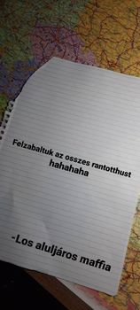
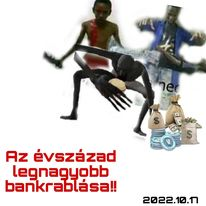

A banda már az ősidők óta jelen volt. Ők hajtották végre a világ legelső büntettét.
Senki nem tudja mi volt az, a régészek csak bizonyitékokat találtak arra hogy csináltak valamit.
Itt az egyik bizonyíték:

A tagjai a következőképpen csatlakoztak a bandába:
1.Pedro of war
2.Magia negra
3.Magdonal
A legutobbi büntettük egy bankrablás volt, ahol ugyan úgy mint az összes többi büntettüknél, meglógtak a rendőrök és minden más elöl!
Készült egy kandikamerás kép is hogy mennyi pénz volt náluk mikor elmenekültek!

Ez volt elméletileg az évszázad LEGNAGYOBB rablása!!!